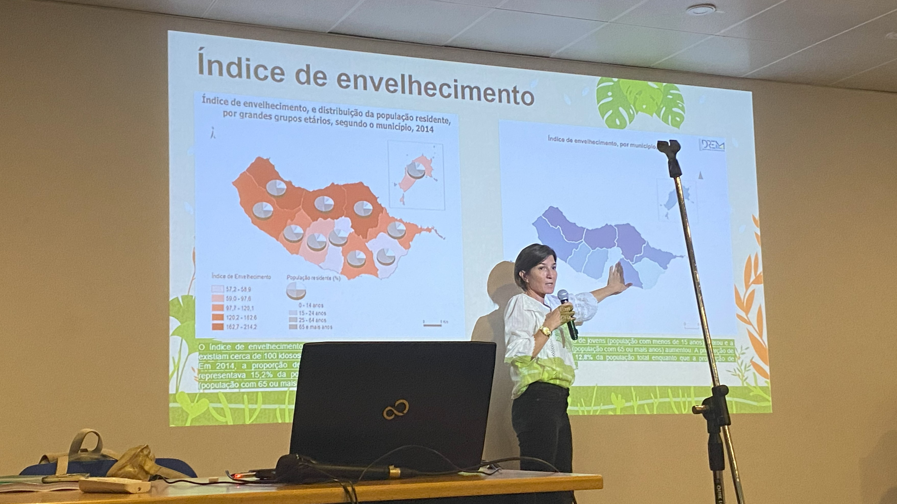
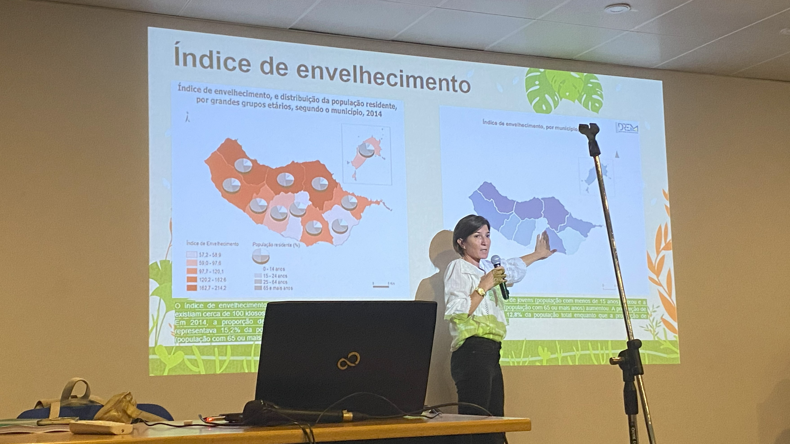
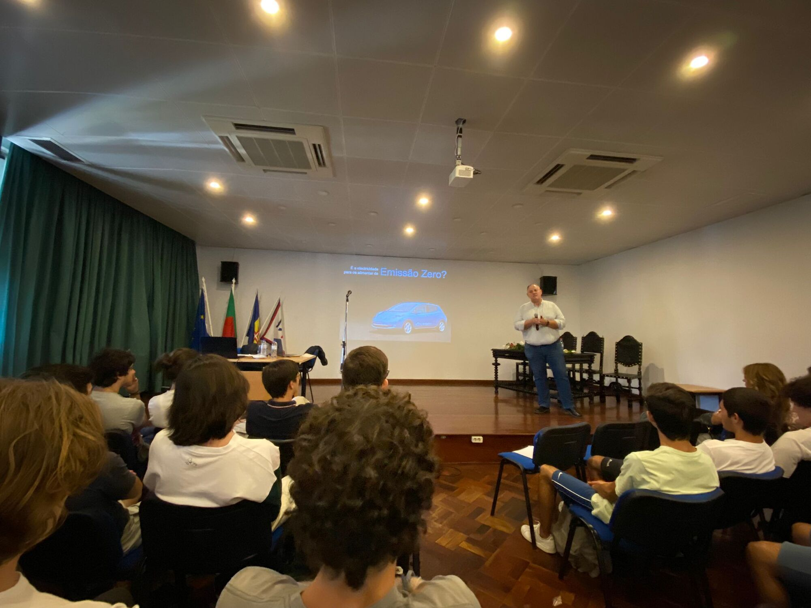
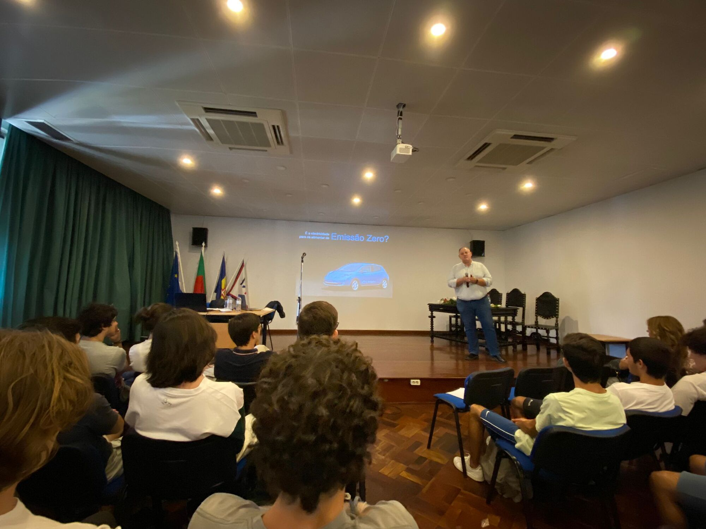

Conceito
Sustentabilidade Ambiental
A sustentabilidade é a capacidade de satisfazer as nossas necessidades sem prejudicar as necessidades das próximas gerações, ou seja, sustentabilidade significa ser capaz de manter o equilíbrio entre a prosperidade económica, a preservação ambiental e o bem-estar social a longo prazo.
- Garante a continuidade de vida no nosso Planeta.
- Promove a conservação da biodiversidade, a preservação de sistemas e redução do impacto ambiental das atividades humanas.
O conceito de sustentabilidade está baseado em três princípios básicos: social, ambiental e económico.

Que pequenas atitudes podem ajudar na sustentabilidade ambiental?
Apesar de algumas atitudes parecerem insignificantes com uma pequena mudança de todos, podemos fazer uma grande diferença.
Poupar água
A água é um recurso finito e que todos nós precisamos, por isso devemos usá-la com cuidado, evitar o desperdício e sempre que possível reaproveitar água.
Reciclar o lixo
O lixo no chão ou na natureza, pode contaminar o solo, entupir saídas de água, causar incêndios, e matar peixes, por isso, coloque sempre o lixo num lugar adequado e recicle de forma correta.
Reduzir o consumo de plástico
O plástico é um material de difícil decomposição e por isso causa muitos danos à natureza, prefira usar embalagens reutilizáveis e sacos de pano.
Utilizar tranportes sustentáveis
Os combustíveis são uma grande causa da poluição ambiental, prefira utilizar transportes públicos, bicicleta ou carros com energia limpa.
Consumir de forma sustentável
Em vez de simplesmente deitar tudo no lixo, usando a criatividade muitos objetos podem ter outras utilizações evitando-se comprar mais produtos.
Fazer compostagem
Fazer compostagem é uma boa opção para reduzir os resíduos orgânicos e ainda produzir fertelizantes naturais.
População Mundial (bilhões)
Países
Quantidade de lixo solto (milhões)
Doenças (por 100 mil habitantes)
Educação
A sustentabilidade no âmbito da
Cidadania e Desenvolvimento
Palestra
Agricultura Biológica
 

{kind=link}
A turma 12.º07 da Escola Secundária de Francisco Franco teve o privilégio de assistir a uma conferência extremamente enriquecedora intitulada "Agricultura Biológica". O evento ocorreu na sala de sessões da escola no dia 2 de novembro de 2022, tendo início às 11h45 com a organização das professoras de geografia A de 11º ano. A oradora convidada foi a Engenheira Márcia Melim, que atualmente desempenha um papel importante na Secretaria Regional de Agricultura e Desenvolvimento Regional.
Durante a conferência, a Engenheira Márcia Melim compartilhou conhecimentos valiosos e esclareceu, de forma clara e acessível, os benefícios e a importância da agricultura biológica para a sociedade. Os estudantes foram envolvidos em uma experiência educacional envolvente, explorando as múltiplas facetas dessa prática agrícola sustentável.
A oradora apresentou de maneira abrangente os princípios e os fundamentos da agricultura biológica, destacando a sua contribuição significativa para a preservação ambiental e a promoção da sustentabilidade. A engenheira Márcia Melim elucidou os alunos como a agricultura biológica evita o uso de pesticidas e fertilizantes sintéticos, favorecendo a saúde do solo, a biodiversidade e a qualidade dos alimentos produzidos.
Além disso, a palestrante abordou as vantagens de consumir produtos provenientes da agricultura biológica, enfatizando seu maior teor nutricional e a ausência de resíduos químicos prejudiciais à saúde. Também ressaltou como essa prática agrícola sustentável contribui para o bem-estar dos consumidores, ao mesmo tempo em que protege o meio ambiente e promove uma relação equilibrada entre a humanidade e a natureza.
A conferência despertou nos alunos uma consciência mais ampla sobre a importância da agricultura biológica como uma alternativa sustentável e saudável para o futuro.
No final do evento, todos os presentes expressaram a sua gratidão pela oportunidade de aprender com uma especialista no campo da agricultura biológica e por terem adquirido conhecimentos valiosos para a sua formação pessoal. A conferência certamente deixou uma impressão duradoura na turma e nos restantes presentes, incentivando-os a considerar a agricultura biológica como uma opção viável e benéfica para a sociedade e o meio ambiente.
Palestra
Energia Nuclear
 

A turma 12.º07 da Escola Secundária de Francisco Franco teve o privilégio de participar numa conferência inspiradora com o tema "Energia Nuclear na Era das Alterações Climáticas". O evento ocorreu no dia 25 de maio, às 11h45, na sala de sessões da escola. O palestrante convidado foi o renomado Professor Bruno Gonçalves, um especialista em energia nuclear.
Durante a conferência, o Professor Bruno Gonçalves apresentou uma visão esclarecedora sobre o papel da energia nuclear no contexto das alterações climáticas. Ele abordou, de maneira abrangente, a importância de explorar fontes de energia alternativas e sustentáveis para combater os desafios ambientais que enfrentamos atualmente.
O palestrante elucidou como a energia nuclear pode desempenhar um papel crucial na transição para uma economia de baixo carbono. Ele destacou os benefícios da energia nuclear em termos de redução das emissões de gases de efeito estufa e da sua capacidade de fornecer energia de forma confiável e contínua.
Ao longo da conferência, o Professor Bruno Gonçalves compartilhou informações relevantes sobre os avanços tecnológicos e as medidas de segurança adotadas na indústria nuclear. Ele enfatizou a importância da gestão adequada dos resíduos radioativos e do controlo rigoroso das centrais nucleares, garantindo a segurança tanto para o meio ambiente quanto para as comunidades circundantes.
Os estudantes da turma 12.º07 tiveram a oportunidade única de interagir com o Professor Bruno Gonçalves, fazendo perguntas sobre a energia nuclear e as suas implicações. A conferência despertou uma consciência mais ampla sobre a necessidade de considerar soluções de energia limpa e sustentável, como a energia nuclear, para enfrentar os desafios das alterações climáticas.
No final do evento, os estudantes expressaram a sua gratidão pela oportunidade de aprender com um especialista no campo da energia nuclear. A conferência certamente deixou uma impressão duradoura na turma, incentivando a explorar e compreender melhor as questões relacionadas à energia nuclear, bem como o seu potencial para mitigar os impactos das alterações climáticas.
Folheto
Energias Renováveis


Folheto informativo sobre energias renováveis
Declarações
Declarações que deram importância à sustentabilidade
Eventos
Eventos e ações de sensabilização ambiental em Portugal
Autores
Os autores deste Site
Gustavo Oliveira
AlunoAluno de 12º ano da Escola Francisco Franco da turma 7, considera-se um estudante determinado e com um considerável conhecimento na área das tecnologias. O seu notável empenho e sede por novos conhecimentos destacaram-se desde o início deste desafio, tornando-o um aluno excepcional, com um futuro promissor nesta área.
Carol Aguiar
ProfessoraA Professora Carol Aguar leciona aulas de Aplicações Informáticas B na escola Secundária de Francisco Franco, desde 2007, tendo vindo a desempenhar outras funções na Direção Regional de Educação. A docente, ao longo do ano, encorajou os seus alunos a desempenharem um papel de busca por conhecimentos e também da contrução deste site, mostrando-se sempre disponível em ajudar.
Gonçalo Gomes
AlunoAluno de 12º ano da escola Francisco Franco na turma 7, considera-se uma pessoa aplicada e com algum conhecimento na área das tecnologias, abraçou este desafio desde o primeiro momento mostrando o seu empenho na busca constante de novos conhecimentos.
galeria
Vê a nossa seleção de fotos


{kind=link}
{kind=link}
{kind=link}
{kind=link}

{kind=link}
Contacto
Precisa de ajuda? Contacte-nos
Morada
R. João de Deus 9, 9000-555 Funchal
geral@esffranco.edu.pt
Telefone
+351 291 202 820